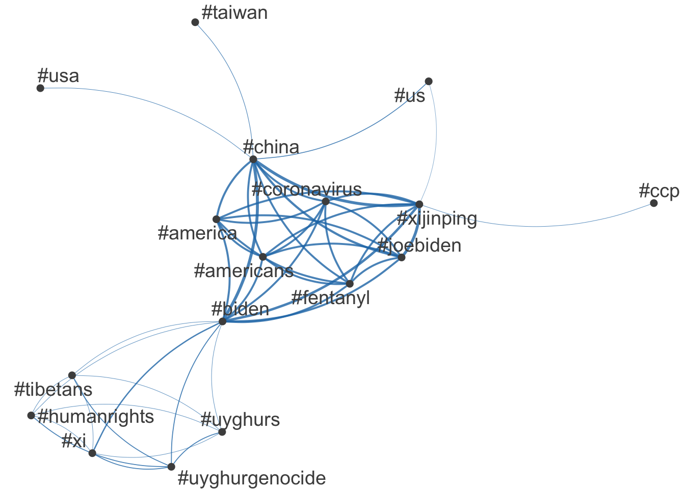

EPPS 6302-Data Collection & Production | Assignment 02
Political Rhetoric Decoded: Text Mining Twitter Trends, Speeches & Wordfish Modeling
Analyzing political discourse through text mining: Twitter trends, presidential speeches, and Wordfish modeling.
Analyzing Political Discourse Using Text Data
This assignment explores the use of computational text analysis techniques to analyze political discourse. Through these methods, we gain insights into public discourse, political rhetoric, and ideological shifts over time. The study is divided into three main sections:
Biden-Xi Summit Twitter Analysis - Extracting and analyzing Twitter data related to the Biden-Xi summit in November 2021, visualizing hashtag networks to identify key topics.
U.S. Presidential Inaugural Speeches - Examining linguistic trends in U.S. presidential inaugural addresses over time, with a focus on key terms like “liberty,” “foreign,” and “we.”
Wordfish Scaling Model - Applying the Wordfish model to scale political documents and estimate ideological positioning using word frequencies.
1. Biden-Xi Summit Twitter Analysis
Loading Twitter Data
The dataset consists of tweets discussing the Biden-Xi summit (November 2021). We load the dataset using readr and extract the tweet text.
Preprocessing the Text Data
We tokenize the tweet text, remove punctuation, and create a document-feature matrix (DFM), which converts text into a structured numerical format. then to analyze discussion topics, we extract hashtags from tweets and identify the most frequently used ones. Finaly, to visualize the relationships between hashtags, we create a feature co-occurrence matrix (FCM) and plot a network graph.
# Set CRAN mirror for package downloadsoptions(repos =c(CRAN ="https://cran.rstudio.com"))# Load necessary librarieslibrary(quanteda)
See https://quanteda.io for tutorials and examples.
library(quanteda.textmodels)library(quanteda.textplots)library(readr)library(ggplot2)# Load Twitter data about the Biden-Xi summit (November 2021)summit <-read_csv("https://raw.githubusercontent.com/datageneration/datamethods/master/textanalytics/summit_11162021.csv", show_col_types =FALSE)# Extract tweet text and create a document-feature matrix (DFM)tweet_text <- summit$texttokens_tweet <-tokens(tweet_text)tweet_dfm <-dfm(tokens_tweet)# Clean the data by removing punctuationcleaned_dfm <-tokens(tweet_text, remove_punct =TRUE) %>%dfm()# Identify and select the top hashtags from the datasethashtag_dfm <-dfm_select(cleaned_dfm, pattern ="#*")top_hashtags <-names(topfeatures(hashtag_dfm, 50))# Create a feature co-occurrence matrix (FCM) for hashtagshashtag_fcm <-fcm(hashtag_dfm)# Visualize the hashtag networktop_hashtag_fcm <-fcm_select(hashtag_fcm, pattern = top_hashtags)textplot_network(top_hashtag_fcm, min_freq =50, edge_alpha =0.8, edge_size =1)

Figure 1: Hashtag Network: The network visualization highlights key discussion topics related to the summit. Central hashtags like #biden and #china dominate the conversation, while #humanrights and #uyghurs indicate concerns over human rights issues.
Discussion:
Analyzing Twitter data from the November 2021 Biden-Xi summit, the semantic network visualization shows key connections between trending hash-tags. Central topics like #biden and #china highlight the focus on U.S.-China relations, while hash-tags such as #coronavirus and #fentanyl suggest that domestic issues like the pandemic and opioid crisis were closely linked to the summit discussions. A distinct cluster around #uyghurs and #humanrights underscores the prominence of human rights concerns, particularly regarding Xi Jinping. More peripheral topics like #taiwan reflect specific geopolitical tensions raised during the event.
2. U.S. Presidential Inaugural Speeches
This section examines U.S. presidential inaugural speeches over time, analyzing their linguistic trends and thematic focus.
Analyzing Early Inaugural Speeches & Keyword Trends Over Time
We create a document-feature matrix (DFM) for speeches from 1789 to 1826, removing common stopwords. We analyze post-1949 speeches and generate x-ray plots for key terms like liberty.
# Quanteda Text Modeling and Analysis Example# Documentation: vignette("quickstart", package = c("quanteda.textstats", "quanteda.textmodels"))# Website: https://quanteda.io/# Load necessary librarieslibrary(quanteda)library(quanteda.textmodels)library(quanteda.textplots)library(readr)library(ggplot2)# Create a Document-Feature Matrix (DFM) for speeches from 1789 to 1826dfm_inaug <-corpus_subset(data_corpus_inaugural, Year <=1826) %>%tokens(remove_punct =TRUE) %>%tokens_remove(stopwords('english')) %>%dfm() %>%dfm_trim(min_termfreq =10, verbose =FALSE)# Analyze U.S. Presidential Inaugural Speeches Over Time# Focus on keywords from speeches after 1949data_corpus_inaugural_subset <-corpus_subset(data_corpus_inaugural, Year >1949)# Generate an x-ray plot for the word "liberty"kwic(tokens(data_corpus_inaugural_subset), pattern ="liberty") %>%textplot_xray()
Figure 2: Keyword Frequency of ‘Liberty’: This visualization highlights the usage pattern of ‘liberty’ in presidential speeches, showing how its prominence fluctuates over time.
Comparing Key Terms in Presidential Speeches
We generate x-ray plots for three key words: foreign, we, and god.
# Tokenize the subset of speeches for further analysistokens_inaugural <-tokens(data_corpus_inaugural_subset)# Generate an x-ray plot for the words "foreign," "we," and "god"textplot_xray(kwic(tokens_inaugural, pattern ="foreign"),kwic(tokens_inaugural, pattern ="we"),kwic(tokens_inaugural, pattern ="god"))
Figure 3: Word Frequency Comparison: ‘Foreign’ was more common during Cold War-era speeches. ‘We’ is frequently used by presidents emphasizing unity (e.g., Obama, Biden). ‘God’ appears consistently toward the end of speeches, reflecting a tradition of invoking divine guidance.
Discussion:
Over time, one consistent similarity among presidents is the frequent use of “God” toward the end of their speeches, reflecting a tradition of invoking moral authority and divine guidance. However, differences emerge in how presidents emphasize unity and foreign policy. Biden, like Obama, frequently uses “we” to emphasize collective action and national unity, whereas Trump’s less frequent use of “we” suggests a more individualistic tone. Earlier presidents like Johnson and Nixon focused heavily on “foreign” issues during the Cold War, while more recent speeches, including Biden’s, show a shift away from foreign policy toward domestic concerns, such as unity and economic recovery.
3. Wordfish Scaling Model
The Wordfish model is an unsupervised text scaling method that estimates document positions based on word frequencies.
Applying Wordfish to the 2010 Irish Budget Speeches
We use Wordfish to analyze Irish parliamentary speeches and estimate ideological positions.
# Load necessary librarieslibrary(quanteda)library(quanteda.textmodels)library(quanteda.textplots)library(readr)library(ggplot2)# Load the Irish Budget 2010 corpusdata(data_corpus_irishbudget2010, package ="quanteda.textmodels")# Transform the corpus into a document-feature matrix (DFM)ie_dfm <-dfm(tokens(data_corpus_irishbudget2010))# Set reference scores for Wordfish modelrefscores <-c(rep(NA, 4), 1, -1, rep(NA, 8))# Estimate Wordfish model with document positionswf <-textmodel_wordfish(ie_dfm, dir =c(6, 5))# Plot estimated word positions, highlighting selected termstextplot_scale1d(wf, margin ="features", highlighted =c("government", "global", "children", "bank", "economy", "the", "citizenship","productivity", "deficit"), highlighted_color ="red")
Figure 4: Wordfish model with document positions: This plot visualizes word scaling based on frequency and distribution in Irish Budget 2010 speeches. Highlighted terms like government, economy, and deficit shape document positioning, while central clustering suggests shared vocabulary. Words at the extremes indicate stronger differentiation in political discourse.
Visualizing Word Positions
This plot highlights the relative importance of words in different political contexts.
# Load necessary libraries# Plot estimated document positions grouped by partytextplot_scale1d(wf, groups = data_corpus_irishbudget2010$party)
Figure 5: Estimated Document Positions by Political Party: This plot shows estimated ideological positions of politicians based on word usage. Fianna Fáil (FF) leans right, Sinn Féin (SF) and Labour (LAB) lean left, while Fine Gael (FG) and the Greens vary. Black dots represent individual positions, with confidence intervals highlighting linguistic and ideological differences.
Scaling Political Documents by Party
We visualize document positions grouped by political party.
# Run correspondence analysis (CA) on the DFMca <-textmodel_ca(ie_dfm)# Plot CA results, grouping documents by partytextplot_scale1d(ca, margin ="documents", groups =docvars(data_corpus_irishbudget2010, "party"))
Figure 6: Estimated Document Positions by Political Party: This plot visualizes document positions using Correspondence Analysis (CA), grouping speeches by political party. It highlights linguistic differences across parties, mapping ideological tendencies based on word usage in Irish Budget 2010 speeches.
Wordfish is an unsupervised Poisson scaling model that estimates document positions based on observed word frequencies amoung the documents. Unlike Wordscores, Wordfish doesn’t require reference texts, making it more flexible to use. Wordfish estimates word positions by calculating the estimates of: Psi (The overall frequency of each word across all documents), and Beta (The word’s power to differentiate between documents).
The following is an example of using wordfish to plot estimated word potions and to show and highlight certain features and where they are positioned relative to the other words. This data comes from 2010 Irish budget speeches and is used to analysis words position and to then also group words use within various parties.